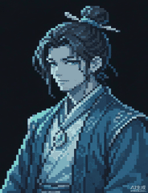

DEDAO 主界面预览 · 三仙命（3 金阶命格）· 成就/图鉴已置于「设置」附近

云
云澈
Ⅰ 炼气 前期
命格
天命之子
万剑归宗
天道宠儿
成就
图鉴
设置
悟性
8
体魄
6
遁速
3
神识
5
道心
4
灵力
2
行动
3
灵石
120
攻击
18
防御
6
气血
140
年龄
19
暴击
12%
闪避
8%
灵力
40
寿元
76
修为
23 / 60
第 3 年 · 春
你于山门静室打坐，灵机渐润，悟性微涨。
【命格】觉醒仙命 · 万剑归宗！剑道之路豁然开朗。
城中出现一位衣衫褴褛的老乞丐，似有传承。
👤
角色
📦
储物袋
🐾
仙缘